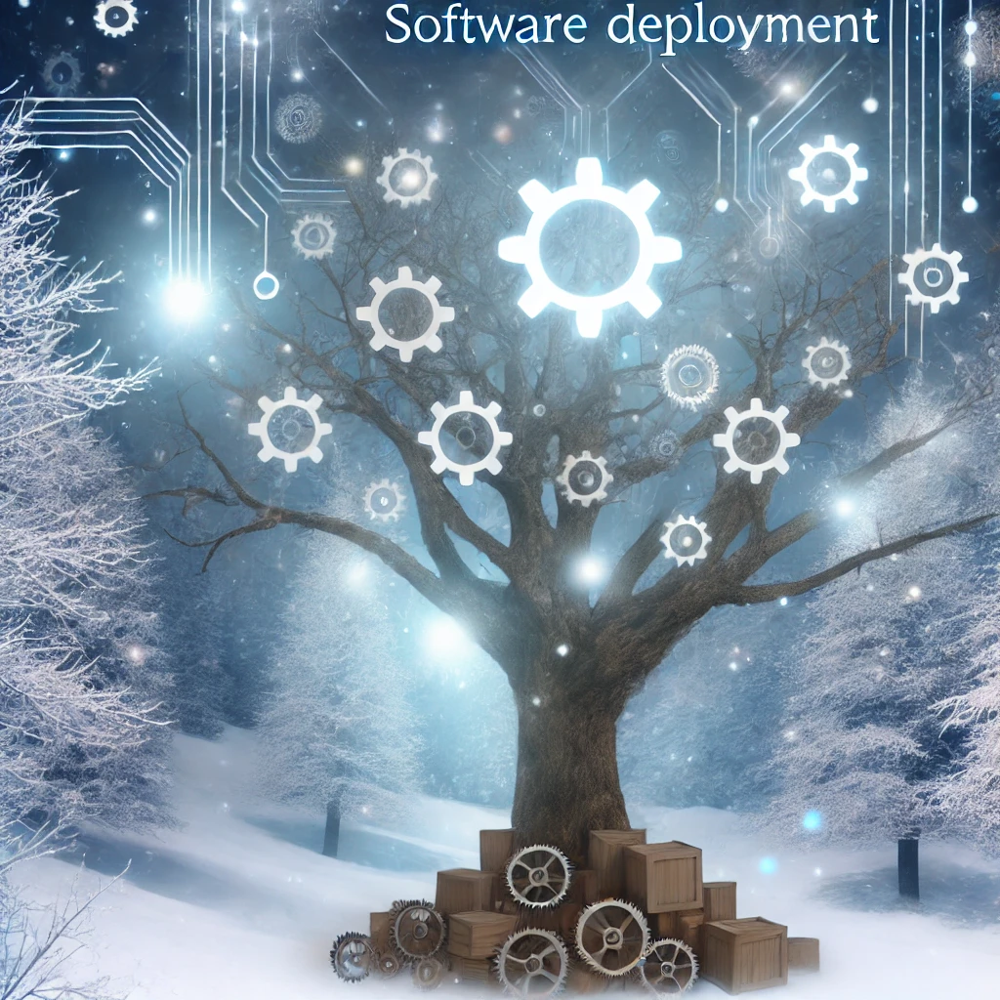

Education
Data science training for technical teams and analytics professionals.
Applied data science
An initiative for organizational training, analytical tool development and data studies.
Data science training for technical teams and analytics professionals.

Data pipelines, predictive models and custom analytical tools for organizational needs.
Applied analysis to understand patterns, evaluate alternatives and support decisions.
Purpose
Make analytical tools, knowledge and capabilities accessible to support informed decisions.
Connect on LinkedIn ↗